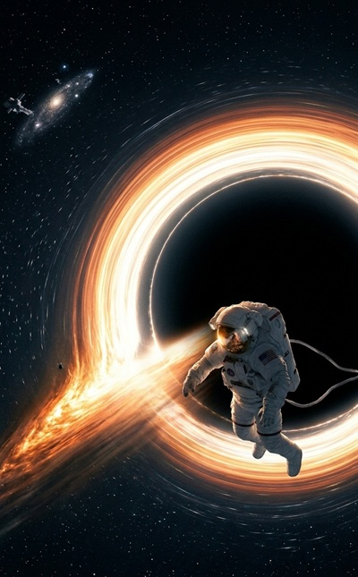

Black holes are among the most mysterious objects in space. They bend space, slow time, and challenge everything we think we know about reality.
One question that fascinates students, scientists, and space lovers is this:
If you were to go inside a black hole and look outward toward the universe, would everything look paused, or would the universe appear to move in fast-forward?
The surprising answer is: the universe would look like it is moving in fast-forward.
This happens because of something called gravitational time dilation, one of the most famous ideas from the theory of relativity by Albert Einstein.
Let’s understand this in a simple way.
Before understanding what happens inside one, let’s first answer an important question:
Black holes help scientists understand gravity, space-time distortion, and the limits of physics. They also play a major role in galaxy formation. Many galaxies, including our Milky Way, have a supermassive black hole at their center.
Black holes are like natural laboratories where the laws of physics are pushed to the extreme.
They help us study:
That is why black hole physics explained simply is one of the most searched science topics today.
The main reason the universe would look fast-forwarded is black hole time dilation.
According to General Relativity:
The stronger the gravity, the slower time moves.
Near Earth, this effect is tiny. Near a black hole, it becomes extreme.
This means time near the black hole passes more slowly compared to time far away in the universe.
So while you feel normal, the outside universe moves much faster relative to you.
This is where things become strange.
Imagine you are falling toward a black hole.
From your point of view:
Everything seems fine.
But when you look outward, stars, planets, and cosmic events appear to speed up.
It feels like watching the universe on fast-forward.

First, you cross something called the event horizon, the point of no return.
After that, you continue falling inward toward the black hole singularity.
Scientists still do not fully know what happens there.
In most cases, yes—you would.
This happens because of a process called spaghettification.
Gravity pulls harder on your feet than your head if you fall feet-first.
Your body gets stretched longer and thinner—like spaghetti.
That’s why it is called spaghettification.
If you somehow survived, you might witness:
Because of extreme time near a black hole, a short amount of your time could equal millions or even billions of years outside.
That means you could theoretically observe far into the future.
Only from the outside observer’s view.
If your friend watched you falling into the black hole, they would see:
To them, it looks like you are paused.
But from your own view:
The universe looks fast-forwarded.
So, if you were to go inside a black hole and look outward:
The universe would look fast-forward, not paused.
Because of gravitational time dilation, your personal time would move slower compared to the outside universe.
You would feel normal, but the rest of space would seem to race ahead.
Black holes are not just giant cosmic traps—they are windows into the deepest mysteries of the universe.
They help us understand time, gravity, and the nature of reality itself.
Whether it is spaghettification, the event horizon, or the possibility of seeing the future of the universe, black holes continue to inspire both science and imagination.